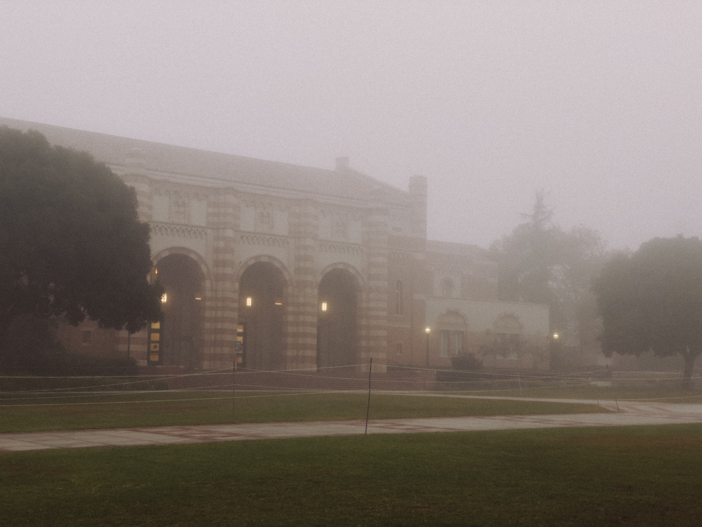

“And he will never know what it is to look up at the night sky and wish.”
― Sarah J. Maas, A Court of Mist and Fury
Intro
We are a growing community of like-minded individuals, based in the greater Los Angeles area devoted to observing our place in the solar system, and beyond! We enjoy partaking in astronomy and various forms of astrophotography. In the next section you will get to view photos taken by the pros at NASA!
Always seeking new members!
Inquire in the contact section.
NASA Data
In this section you can obtain data from NASA by using their APOD API. Click the button to view the NASA photo or video of the day! Adjust the date range to view any previous days.
About

On a stary night in 1984, just outside of the city, 6 members of UCLA gathered in seceret to forge a blood pact with the Gods of the ancient times. These very same 6 members then went on to form the L.A. Star Gazers Society, too. Here are a few of their stories.
Dr. Maria Sigmunde
Dr. Sigmunde is a theoretical physicist with a passion for the unknown. Experienced in numerous telescope designs and functionality from low-end to professional setups.
Jessie Sharpe
Jessie is a recent addition to the Society, bringing her knowledge of astrophysics and telemetry to the forefront of the group.
Karl
This is Karl, one of the humans of all time. Founding member of the Gazers. Lover of food and life.
Eric Ludwig
Eric formed the group with our friend Karl from above. Slowly over the last half decade, the group has gronw to many more members than you see here.
Contact
If you are interested in joining our humble little star gazing community, please feel free to reach out to us using the provided form below! Please provide your name, general location, and the reasons for why you are interested in joining! We will reach out to you within a week.